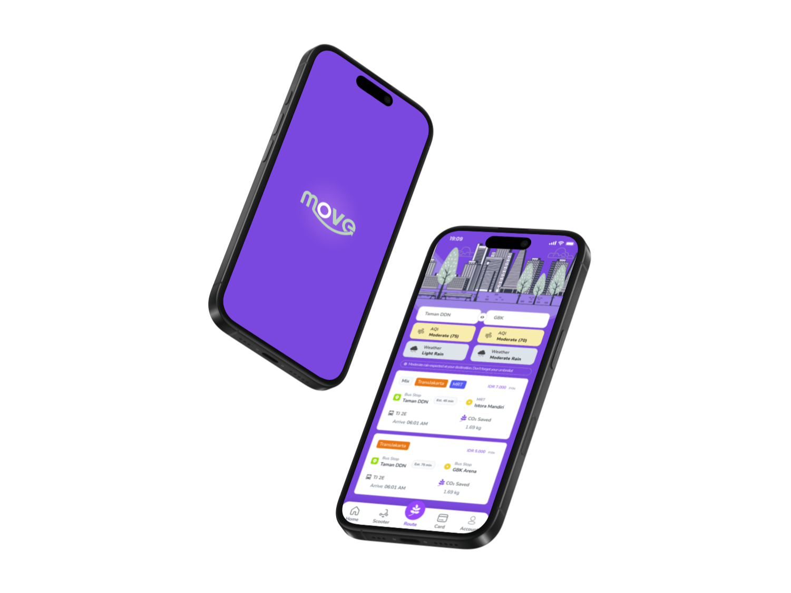

<!-- <!DOCTYPE html>
<html lang="en">
<head>
<meta charset="UTF-8">
<meta name="viewport" content="width=device-width, initial-scale=1">
<title>MOVE — Case Study · Salsabillah Febridha</title>
<meta name="description" content="Multi-modal urban mobility app. Best Mobile App Design at the Vocational Worldwide Olympiad 2024, against 18 teams from 3 countries.">
<link rel="shortcut icon" href="../img/assets/logo.png">
<meta property="og:title" content="MOVE — Case Study">
<meta property="og:description" content="Multi-modal urban mobility app. Best Mobile App Design at the Vocational Worldwide Olympiad 2024, against 18 teams from 3 countries.">
<meta property="og:image" content="../img/project/move.png">
<link rel="preconnect" href="https://fonts.googleapis.com">
<link rel="preconnect" href="https://fonts.gstatic.com" crossorigin>
<link href="https://fonts.googleapis.com/css2?family=Plus+Jakarta+Sans:wght@400;500;600;700;800&family=Inter:wght@300;400;500;600&family=Instrument+Serif:ital@0;1&family=JetBrains+Mono:wght@400;500&display=swap" rel="stylesheet">
<link href="../style.css" rel="stylesheet">
</head>
<body>

<div class="progress" aria-hidden="true"></div>

<header class="nav">
  <div class="wrap">
    <a class="brand" href="../index.html">
      
      <span>Salsabillah Febridha<small>UI/UX Designer</small></span>
    </a>
    <nav class="nav-links" aria-label="Primary">
      <a href="../index.html#work">Work</a>
      <a href="../index.html#about">About</a>
      <a href="../index.html#experience">Experience</a>
      <a href="../index.html#skills">Skills</a>
      <a href="../index.html#contact">Contact</a>
    </nav>
    <div class="nav-cta">
      <a class="btn btn-ghost btn-sm" href="https://drive.google.com/file/d/15Mt3UDsxsWGa_FymyFSpdvchHsTzqEYf/view?usp=sharing" target="_blank" rel="noopener">Résumé</a>
      <button class="nav-toggle" type="button" aria-label="Toggle menu" aria-expanded="false"><span></span></button>
    </div>
  </div>
</header>

<main>
<section class="case-hero">
  <div class="wrap">
    <a class="back-link" href="../index.html#work"><span aria-hidden="true">←</span> All work</a>
    <p class="eyebrow" data-reveal>UI/UX Design · International competition</p>
    <h1 class="case-title" data-reveal>MOVE</h1>
    <p class="lede" data-reveal>One trip, every mode. A journey planner that spans public transport, e-scooters, payment and air quality — and won Best Mobile App Design internationally.</p>

    <dl class="case-facts" data-reveal>
      <div><dt>Role</dt><dd>UI/UX Designer</dd></div>
      <div><dt>Timeline</dt><dd>2024</dd></div>
      <div><dt>Context</dt><dd>Vocational Worldwide Olympiad 2024</dd></div>
      <div><dt>Tools</dt><dd>Figma · Canva · Maze</dd></div>
      <div><dt>Outcome</dt><dd>🏆 Best Mobile App Design</dd></div>
    </dl>

    <div class="case-cover" data-reveal>
      
    </div>
  </div>
</section>

<div class="wrap">
  <div class="case-layout">
    <aside class="case-toc" data-spy>
      <p class="eyebrow no-rule">Contents</p>
      <nav>
        <a href="#context">The brief</a>
        <a href="#problem">The problem</a>
        <a href="#approach">Approach</a>
        <a href="#design">What I designed</a>
        <a href="#outcome">Outcome</a>
      </nav>
    </aside>

    <div class="prose">
<section id="context">
  <h2>The brief</h2>
  <p>MOVE was built for the Vocational Worldwide Olympiad 2024, an international competition that
    put us against 18 teams from three countries. The brief we set ourselves was urban mobility —
    specifically, the gap between how many transport options a city technically offers and how few
    of them a person can plan in one go.</p>
</section>

<section id="problem">
  <h2>The problem</h2>
  <p>A city commute is rarely one mode. It's a walk, then a bus, then a train, then the last
    kilometre that nothing covers. Each leg lives in a different app, each with its own payment,
    its own map and its own idea of what "arriving" means. The result is that the greener option
    loses to the car not on merit but on friction.</p>
  <div class="callout">
    <p>People don't reject public transport because it's slower. They reject it because planning it
      is slower.</p>
  </div>
</section>

<section id="approach">
  <h2>How we worked</h2>
  <ol>
    <li><strong>Defined the journey, not the screen.</strong> The unit of design was a complete
      door-to-door trip, which forced every feature to justify itself against a real leg of it.</li>
    <li><strong>Prototyped in Figma</strong> as an interactive flow, so the multi-modal plan could
      be walked through rather than described.</li>
    <li><strong>Tested with Maze</strong> to see where people hesitated in the planning flow.</li>
    <li><strong>Pitched the reasoning</strong>, not the pixels — the deck carried the argument for
      why each feature earned its place.</li>
  </ol>
</section>

<section id="design">
  <h2>What the product does</h2>
  <ul>
    <li><strong>Multi-modal journey planning</strong> — one plan that spans every public transport
      mode instead of one app per operator.</li>
    <li><strong>Carbon emissions tracking</strong> — the saving made visible, so the better choice
      is also the one that feels rewarding.</li>
    <li><strong>Electric scooter rental</strong> — the last-kilometre problem, handled inside the
      same plan.</li>
    <li><strong>Electronic card integration</strong> — payment folded into the journey rather than
      bolted onto it.</li>
    <li><strong>Real-time air quality and weather</strong> — the information you need before you
      decide to walk, surfaced before the decision, not after.</li>
  </ul>

  <div class="shots">
    <figure class="shot">
      
      <div class="slot"><span class="slot-mark">01</span><span class="slot-path">img/case/move/01.png</span></div>
      <figcaption>Journey planner</figcaption>
    </figure>
    <figure class="shot">
      
      <div class="slot"><span class="slot-mark">02</span><span class="slot-path">img/case/move/02.png</span></div>
      <figcaption>Emissions tracking</figcaption>
    </figure>
    <figure class="shot">
      
      <div class="slot"><span class="slot-mark">03</span><span class="slot-path">img/case/move/03.png</span></div>
      <figcaption>Scooter rental</figcaption>
    </figure>
    <figure class="shot">
      
      <div class="slot"><span class="slot-mark">04</span><span class="slot-path">img/case/move/04.png</span></div>
      <figcaption>Card &amp; payment</figcaption>
    </figure>
    <figure class="shot">
      
      <div class="slot"><span class="slot-mark">05</span><span class="slot-path">img/case/move/05.png</span></div>
      <figcaption>Air quality</figcaption>
    </figure>
    <figure class="shot">
      
      <div class="slot"><span class="slot-mark">06</span><span class="slot-path">img/case/move/06.png</span></div>
      <figcaption>User flow</figcaption>
    </figure>
  </div>
</section>

<section id="outcome">
  <h2>Outcome</h2>
  <div class="metrics">
    <div><b>1st</b><span>Best Mobile App Design, VWO 2024</span></div>
    <div><b>18</b><span>teams competing</span></div>
    <div><b>3</b><span>countries represented</span></div>
  </div>
  <p>MOVE won <strong>Best Mobile App Design</strong> at the Vocational Worldwide Olympiad 2024.
    Walk the interactive prototype
    <a class="link" href="https://bit.ly/MovePrototype-VWO-UIUX" target="_blank" rel="noopener">here ↗</a>,
    or read the
    <a class="link" href="https://drive.google.com/file/d/18G8luMYh-2ifWxKRVLPIQO9E48R-zhUT/view?usp=sharing" target="_blank" rel="noopener">pitch deck ↗</a>.</p>
</section>
    </div>
  </div>
</div>

<nav class="case-nav">
  <a href="ukirama-site.html"><small>← Previous</small><strong>Ukirama Site &amp; ERP</strong></a>
  <a href="nobarin.html"><small>Next →</small><strong>Nobarin</strong></a>
</nav>

<section class="section">
  <div class="wrap">
    <div class="contact-panel" data-reveal>
      <p class="eyebrow">What's next</p>
      <h2 class="h2">Want the detail behind this one?</h2>
      <p class="lede">Happy to walk through the decisions, the versions that didn't work, and what
        I'd change if I built it again.</p>
      <div style="margin-top:2rem;display:flex;flex-wrap:wrap;gap:.75rem;position:relative;z-index:1">
        <a class="btn btn-primary" data-magnetic href="https://mail.google.com/mail/u/0/?view=cm&tf=1&fs=1&to=salsabillahfebridha@gmail.com" target="_blank" rel="noopener">Get in touch <span class="arw">→</span></a>
        <a class="btn btn-ghost" href="../index.html#work">See all work</a>
      </div>
    </div>
  </div>
</section>
</main>

<footer class="footer">
  <div class="wrap">
    <p>© <span data-year>2026</span> Salsabillah Febridha — designed and built by hand.</p>
    <a class="to-top" href="#">Back to top <span aria-hidden="true">↑</span></a>
  </div>
</footer>

<script src="../main.js"></script>
</body>
</html> -->
